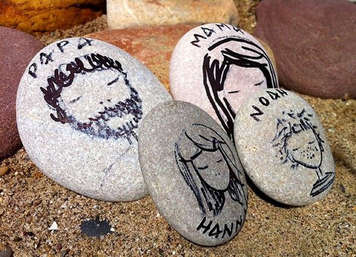
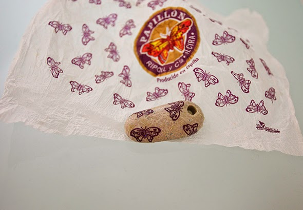

Hi you all!! We're back. Slowly getting back to normal life.
Hallo an alle!! :-)


Hi you all!! We're back. Slowly getting back to normal life.
Hallo an alle!! :-)

These milk bottles are small yogurt drink container. So that the little ones can drink too, you just need balloons or ballons for water bombs (which…
Read more →Noah´s dragon has now a carrying case. We have painted the cardboard box of small bottles. It already has a handle so we can transport him…
Read more →
From a cereal box you can make a quick hat using scissors and a staple gun. A old picture of Noah :-)
Read more →
To find broken glass on the beach is true happiness. We adhered these to a Plexiglas plate (glue gun). A real eye-catcher.
Read more →
With decoupage (decoupage glue), we have pasted napkins and other things thin papers on stones. Our experience, it works better with light colored stones. So you…
Read more →